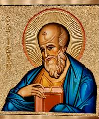

"Sebab kasih kita seharusnya bukan hanya kata-kata atau ucapan lidah, tetapi harus berupa kasih yang sejati, yang dibuktikan melalui tindakan."
Yohanes dipanggil secara langsung oleh Yesus untuk menjadi murid-Nya. Pertemuan yang mengubah hidup ini mengubah arah hidupnya selamanya, membawanya untuk meninggalkan segala sesuatu dan mengikuti Master.
Sebagai salah satu murid yang paling dekat, Yohanes menyaksikan keajaiban luar biasa—pemberian makan kelima ribu orang, kebangkitan Lazarus, berjalan di atas air—which deepened his understanding of divine power.
Yohanes berdiri di kaki salib bersama Maria, ibu Yesus. Moment yang mendalam ini dari penderitaan dan pengorbanan menjadi landasan dari pemahamannya tentang cinta pembebasan.
Yohanes adalah salah satu dari yang pertama mengenali Yesus yang telah bangkit. Pengalaman ini memperkuat imannya dan memberinya dasar spiritual untuk memimpin Gereja awal dengan keyakinan yang tak goyah.
Pada hari Pentakosta, Yohanes menerima Roh Kudus dan menjadi pilar gereja Yerusalem. Ia melayani, mengajar, dan memimpin dengan otoritas kerasulan dan kepedulian pastoral yang penuh belas kasih.
Dikeksekusi di Patmos, Yohanes menerima Wahyu mendalam tentang kemuliaan Kristus dan kemenangan akhir kerajaan Tuhan, yang dia catat dalam Kitab Wahyu.
"Most loving Father, I trust in Your infinite compassion. Help me to love as John loved—with a heart devoted to serving others and spreading the light of Christ. Grant me the wisdom to understand Your truth and the courage to live it faithfully. May I be a vessel of Your love in this world. Amen."
"In the quiet of this moment, reflect on John's profound insight: 'In the beginning was the Word, and the Word was with God, and the Word was God.' Consider how God's eternal love surrounds you. What does it mean to live in that love today?"
"I have come that they may have life, and have it to the full."